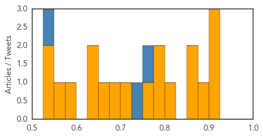
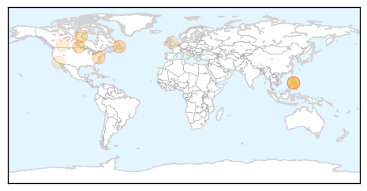

Unknown
30-Day Web Trend
0 alerts, 0 warnings

30-Day Twitter Trend
1 alerts, 0 warnings

Article Locations

Article Confidences
Top Articles:
- 0.922
- Scarlet fever cases rise to weekly high in England
- 0.917
- Chicago Tribune
- 0.902
- Man dies in France after contracting rabies
- 0.886
- Hong Kong Health Boss Suggests Live Poultry Ban for Bird Flu Control
- 0.866
- Calif. state senator indicted on corruption, gun trafficking charges
- 0.866
- Gazprom says Russian gas exports to Europe up 2.4 pct in Q1 y
- 0.814
- China facing increasing vector-borne disease risk
- 0.789
- Man dies in Paris after contracting rabies in Mali
- 0.780
- Health Protection Scotland probes scarlet fever outbreak
- 0.759
- Drought worsens food crisis in poverty-stricken Haiti - Haiti
- 0.714
- China facing increasing vector-borne disease risk
- 0.699
- Pink eye outbreak shuts schools in American Samoa
- 0.660
- Rabies kills man in France after visit to Mali
- 0.643
- Réformer l'UEM pour enrayer la montée de la pauvreté
- 0.626
- CDC warns of new risk related to e-cigarettes
- 0.586
- Health care in danger - Violent incidents affecting the delivery of health care, January 2012 to December 2013 - World
- 0.559
- UN warns of health crisis brewing in west Myanmar. Health. Tengrinews.kz
- 0.547
- Arakan govt say they can meet food, medicine needs- DVB Multimedia Group
- 0.533
- Poisoning Caused by E-Cigarettes on the Rise : Physical Wellness : Counsel & Heal
Top Tweets:
- 0.800
- Ayer fui un d√≠a fabuloso, Que felicidad poder ser parte de d√≠as importantes en la vida de mi hija Te Amo YAY üíú
- 0.753
- Peak month” of flu activity is the month with the highest % of respiratory specimens testing positive for flu virus infection flufacts 20140404 unkno 0 0.126720069527 FluFactFriday: Flu activity peaked in late December for the 2013-14 season and began a downward trend in early Jan. 20140404 unkno 0 0.0142496828684 : “I tink dere is beauty in everything. Wat ‘normal’ ppl would perceive as ugly, I cn usually see something of beauty in it. 20140404 unkno 0 0.00740287583477 @kiayahfitness: There must be a God http://t.co/TfE3cpVVLC"
- 0.729
- Flu Fact Friday: Complications of the flu can lead to bacterial pneumonia, ear infections, sinus infections, dehydration, and worsening...
- 0.586
- Cartes recorrió instalaciones de fabrica de jeans en San Lorenzo:  El presidente de la República, Horacio Cart... http://t.co/lria2ZXZFL
- 0.535
- Lunes 07 de abril es el Día Mundial de la Salud. Enfermedades transmitidas por vectores. Anopheles es el mosquito que transmite la malaria.
- 0.518
- Un d√≠a de trabajo de provecho' üôèüí™ ya estoy con mi chiquita pero no quiero cocinar üòÇüòÇüòÇ creo que hoy invito Yo
Measles
30-Day Web Trend
0 alerts, 0 warnings

30-Day Twitter Trend
0 alerts, 0 warnings

Article Locations
Article Confidences

Top Articles:
- 0.988
- Measles confirmed across Canada, doctors blame anti-vaxxer movement
- 0.981
- City weeks away from declaring measles outbreak over
- 0.964
- More measles cases in province
- 0.947
- Measles In Edmonton Increase Cases In Alberta To 6
- 0.916
- Measles confirmed in Edmonton; first case since 2012
- 0.892
- Doctor: Potential for outbreak of measles looms in Washington - Local News
- 0.551
- Customers at two Calgary restaurants put on warning list
- 0.523
- Politicians should stop pandering to anti-fluoridation campaigners
- 0.517
- Measles spike triggers drive for vaccinations
Top Tweets:
-
No tweets found for Apr 04, 2014